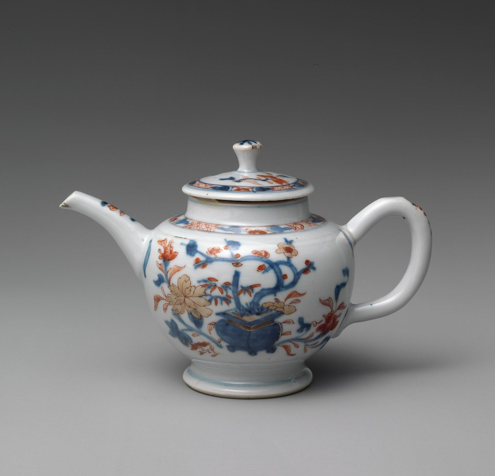
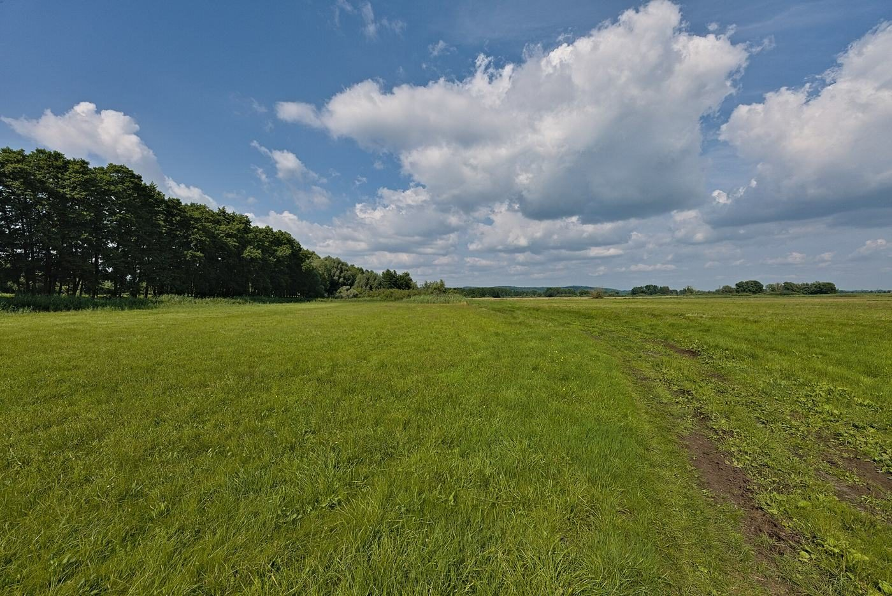

制作側の連想
ティーコゼーの部位を、配置図にしてみる
ティーコゼー(ポットにかぶせる保温用の布カバー)の部位を図にしたもので、制作側の連想です。お店の理念・由来とは無関係で、実際の製品の仕様を示すものでもありません。 六つの部位に番号をふり、上の図と並べています。
凡例
六つの部位
- 1つまみてっぺんについた小さな飾りの玉で、かぶせたり外したりするときにつかむところ。
- 2本体の外布ポットをすっぽり包む、ドーム形のいちばん大きな部分。
- 3注ぎ口の切り欠き片側の裾にあけたアーチ形のあきで、ポットの注ぎ口を外に出すところ。
- 4持ち手の切り欠き反対側の裾にあけたアーチ形のあきで、ポットの持ち手を外に出すところ。
- 5中綿外布の内側にあるふっくらした層で、キルティングの縫い目で押さえている。
- 6裾の縁取りぐるりと一周する帯の部分で、布の端を丈夫にまとめている。
写真(イメージ)
写真(イメージ)




写真はイメージです。お店のものではありません。
ご案内
お店のこと(確認できたものだけ)
| 所在地 | 〒683-0008 鳥取県米子市車尾南１丁目１６−３１ |
|---|---|
| 電話 | 準備中 |
| 営業時間 | 準備中 |
| 定休日 | 準備中 |
| ご予約 | 準備中 |
| 駐車場 | 準備中 |
| SNS | Instagram @higashiyama_market |